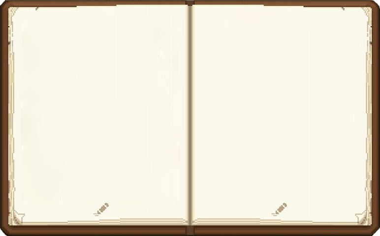
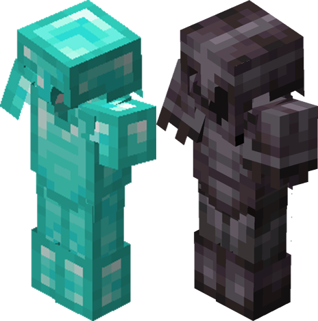

El Wither Boss es uno de las criaturas más difíciles de matar del juego, por lo que necesitaremos un buen equipamiento antes de enfrentarnos a él.
Antes de la batalla, necesitaras contar con una buena armadura y una espada adecuada.
Si bajas, encontraras una tabla con diferentes espadas y sus encantamientos.

Encantamientos para la ESPADA
| Encantamiento | Niveles de Encantamiento | Descripción |
|---|---|---|
| Filo | I, II, III, IV, V | Aumenta el daño de ataque normal |
| Irrompibilidad | I, II, III | Aumenta la duración de la espada |
| Reparación | - No tiene niveles - | Repara la duración de la espada al ganar experiencia |
| Botín | I, II, III | Aumenta la probabilidad de soltar objetos al matar |
| Aspecto Ígneo | I, II | Aplica efecto de fuego al golpear |
| Filo Arrasador | I, II, III | Aumenta el daño en los golpes a varios enemigos a la vez |
Encantamientos para la ARMADURA
| Encantamiento | Niveles de Encantamiento | Descripción |
|---|---|---|
| Protección | I, II, III, IV | Aumenta la cantidad de defensa de la armadura |
| Irrompibilidad | I, II, III | Aumenta la duración de la armadura |
| Reparación | - No tiene niveles - | Repara la duración de la armadura al ganar experiencia |
| Caída de pluma | I, II, III, IV | Disminuye el daño de caída |
| Espinas | I, II, III | Devuelve a los enemigos parte del daño recibido |
| Protección contra el fuego | I, II, III, IV | Aumenta la protección del daño por fuego |
Otros objetos importantes
- Escudo
- Pico
- Arco y flechas
- Comida
- Manzanas doradas
- Bloques
- Cubo de agua